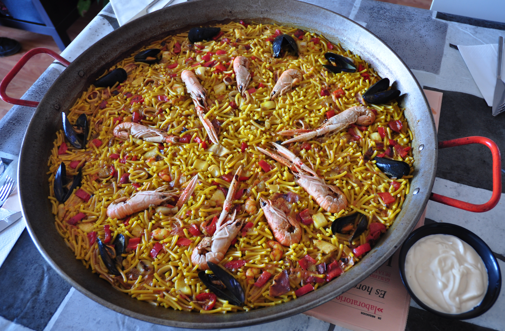
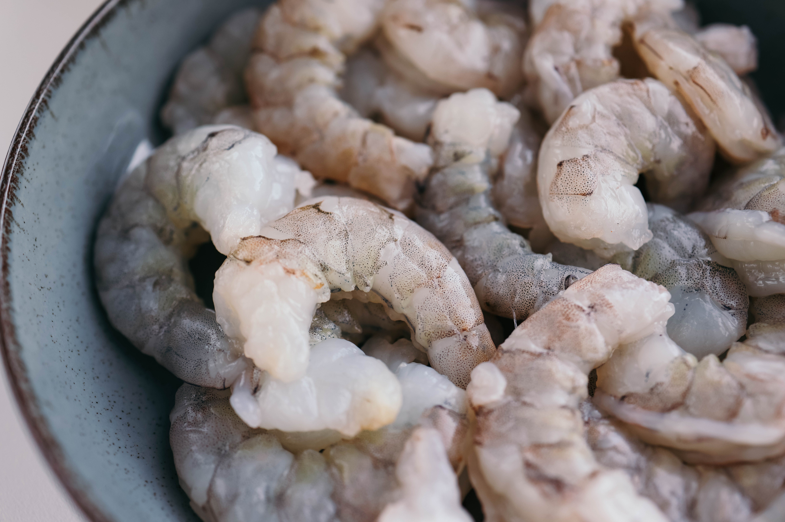
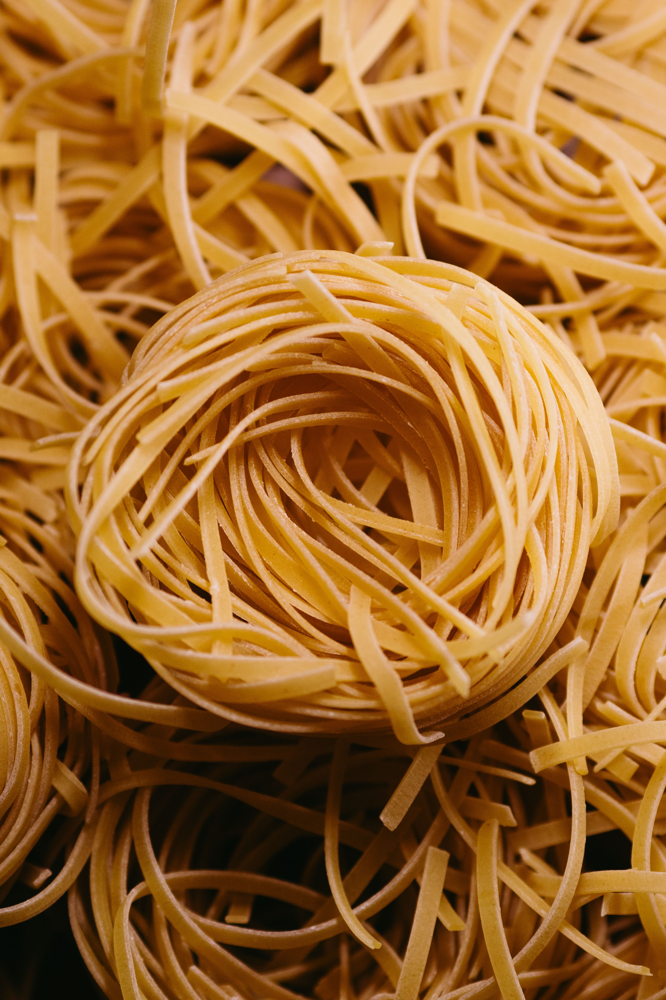
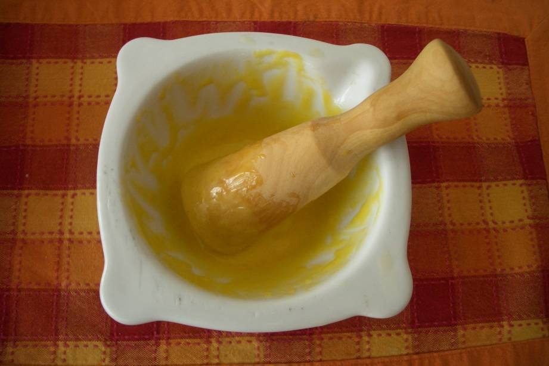

Fideuà

Història
La fideuà és un plat mariner de la costa mediterrània, nascut a Gandia, que segueix la lògica de la paella però substitueix l'arròs per fideus curts i gruixuts. El secret és un fumet de peix intens i uns fideus ben torrats abans de coure'ls.
Ingredients
Per a quatre persones calen 400 g de fideus del número 2, 300 g de sípia, 12 gambes, un tomàquet madur ratllat, dos grans d'all, un litre de fumet de peix, oli d'oliva, pebre vermell dolç i sal. Per acompanyar-la, un bon allioli.
Elaboració
Es sofregeixen les gambes i es reserven. A la mateixa paella es fan la sípia, l'all i el tomàquet, i s'hi afegeix el pebre vermell. S'hi tiren els fideus, es torren un parell de minuts i es cobreixen amb el fumet calent. Es cou a foc viu uns deu minuts, es tornen a posar les gambes i es deixa reposar abans de servir.
Fotos


